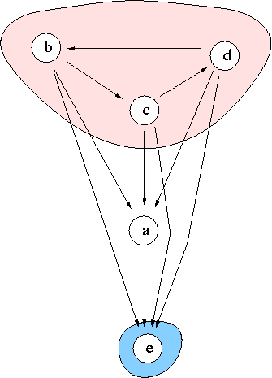

Social Choice
Voting profiles
Best unique choice problematics, hyperkernel approach test
The example concerns the determination of a winner in a voting game.
The set of 5 candidates is denoted A = {a,b,c,d,e}. The jury consists of seven equi-significant voters C = {v_1,v_2,v_3,v_4,v_5,v_6,v_7} with following individual preferences:
| rank | v_1 | v_2 | v_3 | v_4 | v_5 | v_6 | v_7 |
|---|---|---|---|---|---|---|---|
| 1 | a | a | a | c | c | b | e |
| 2 | b | d | d | b | d | c | c |
| 3 | c | b | b | d | b | d | d |
| 4 | d | e | e | e | a | a | b |
| 5 | e | c | c | a | e | e | a |
The simple pairwise majority voting gives the following global preference or indifference relation on A:

We observe a Condorcet paradox at the beginning of the simple pairwise majority voting. Indeed, b is preferred or indifferent to d, which is preferred or indifferent to c, which is in turn preferred or indifferent to b.
The weighted concordance index S of the global preference or indifference relation is the following:
| S | a | b | c | d | e | ds |
|---|---|---|---|---|---|---|
| a | 1.00 | 0.43 | 0.43 | 0.43 | 0.71 | 3.00 |
| b | 0.57 | 1.00 | 0.57 | 0.43 | 0.86 | 3.43 |
| c | 0.57 | 0.43 | 1.00 | 0.71 | 0.57 | 3.28 |
| d | 0.57 | 0.57 | 0.29 | 1.00 | 0.86 | 3.29 |
| e | 0.29 | 0.14 | 0.43 | 0.14 | 1.00 | 2.29 |
| de | 3.00 | 2.57 | 2.72 | 3.00 | 4.00 | 15.29 |
Due to the tricycle <b,c,d> at the beginning of the relation S, the valued digraph does not support any dominant kernel. But candidate e is clearly ranked as worst choice.
The odd circuit augmented digraph however correctly supports b,c,d as dominant hyperkernel.